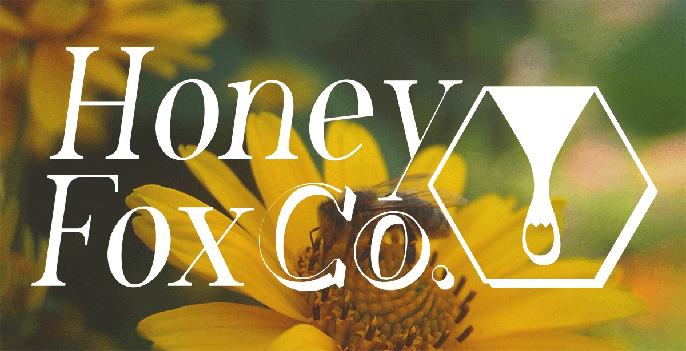
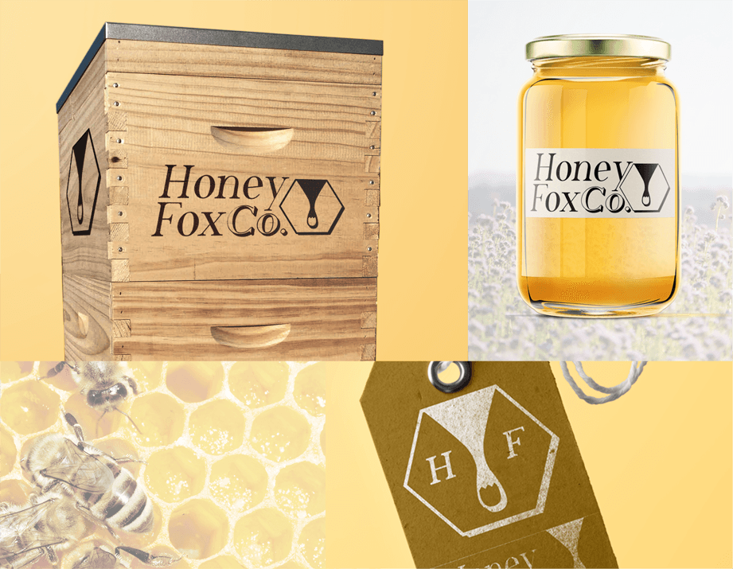
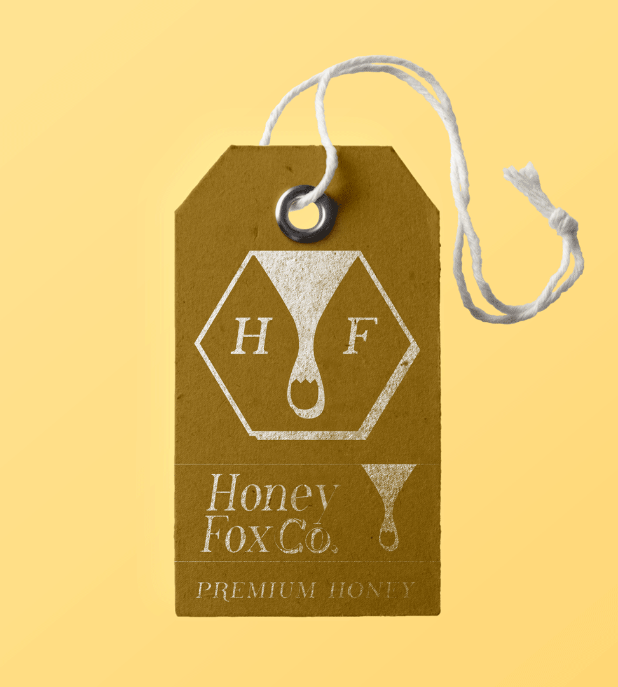
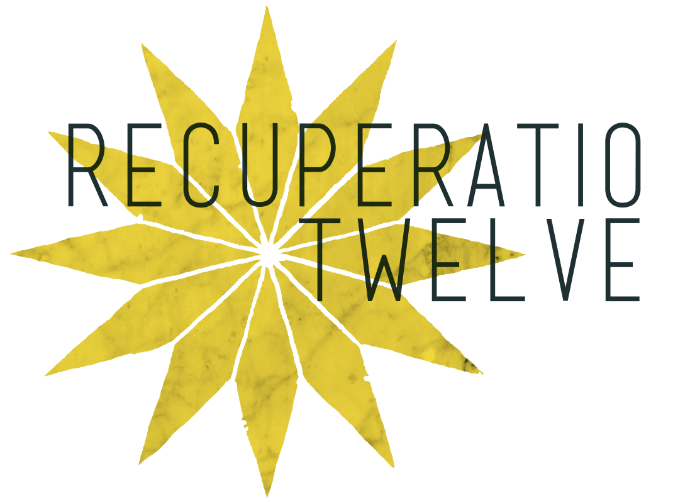
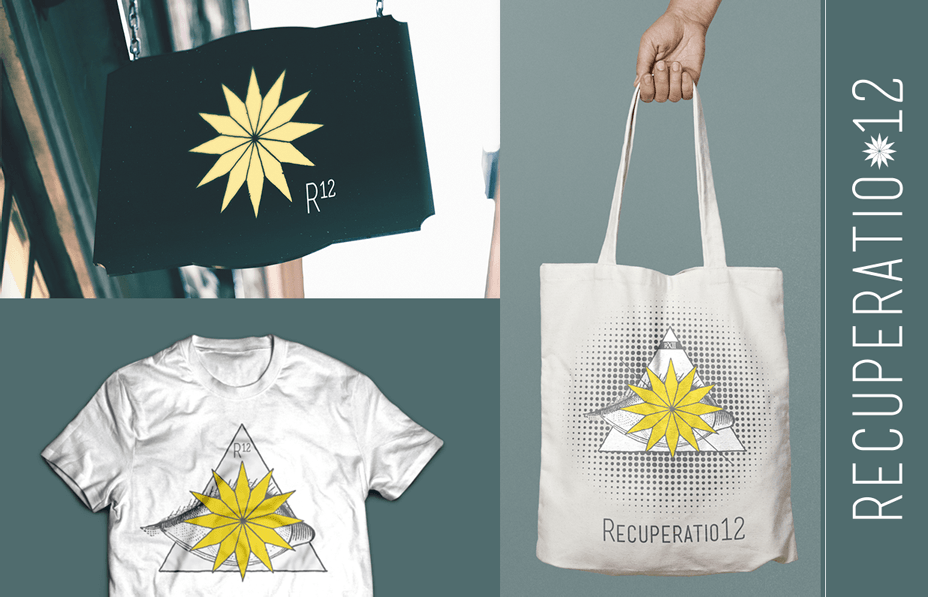
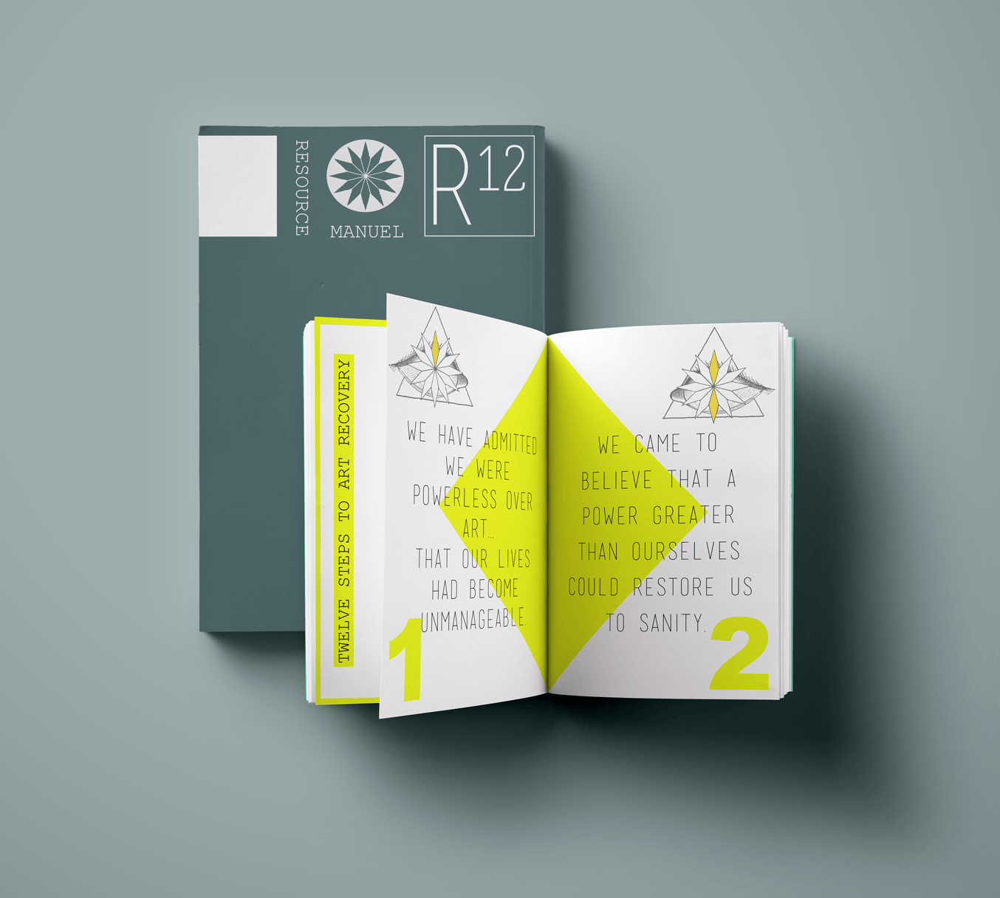
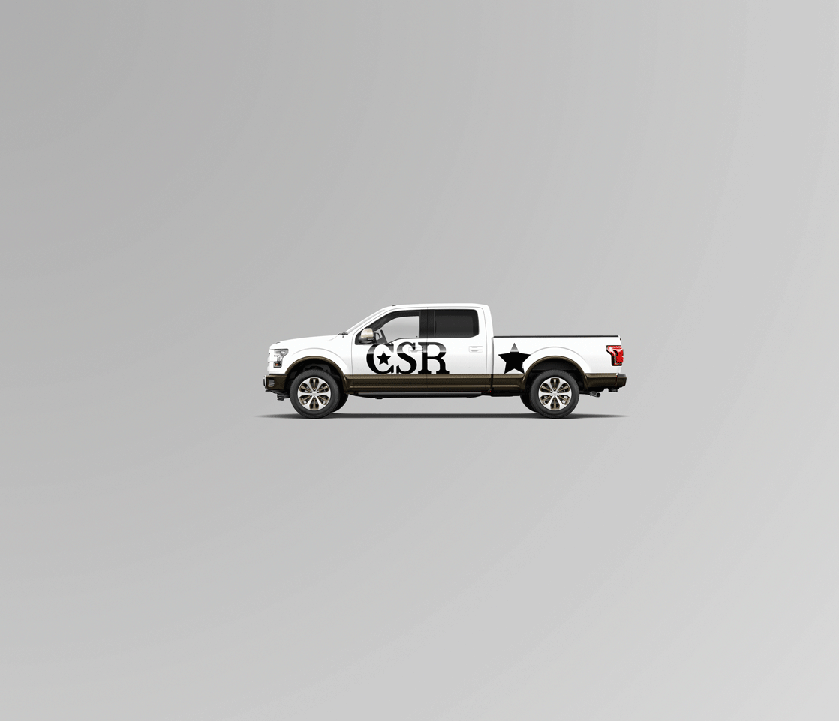
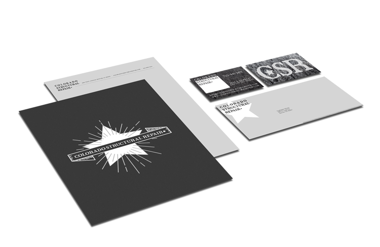

Graphic Design
Logo Treatments
Honey Fox Company



Recuperatio 12



Colorado Structural Repair


UI/UX + Web


Starz is an American premium cable and satellite television network that provides video streaming services on mobile platforms, 10-foot platforms (Roku, Amazon Fire, etc.) & the web servicing two applications Starz (english) & Pantaya (spanish). At Starz, I worked on the web platforms team for both applications assisting with internal projects and as a lead UI designer.
File and Design System Redesign
Role:
UI Designer
Type:
Responsive Web
Apps:
Starz & Pantaya
Technology:
Sketch, Sketch Plugins, Zeplin & Plant
Team:
Karie Yoshioka, Kevin Holland, Laurie Wiebener & Ryan McCarthy
Problem
The UI file system was making it increasingly difficult to keep up with file maintenance / updates. Finding the source of truth was time staking & it generally demanded updates before you could begin work.
Solution
Develop a design system centered around a single master file to be used as a staple source of truth & simplify the design system structure making it easier for designers to create comps.
Process
Integrate 40+ files into one master file, adapt to new naming conventions & file structure, develop new symbols & symbol master file, create new feature workflow for designers
1. File Integration
I first focused on structuring the master file the same as the Starz.com's sitemap. For each main page, starting at home, we gave it a prefix of an increment in ten. This gave us space to sort out alternate flows that shared a particular page. Gathering all the files that matched with a page, I would then insert the screens into the master file. After fully integrating a file I would then organize the page of artboards & their layers.

ex. Pages Layout and Naming Conventions

ex. Artboard Layout and Naming Conventions
Throughout this process I was constantly harnessing Sketch Plugins to speed up production; working with batches, integrating files, multiple layer selection, etc. A few of my favorite plug-ins: Craft, Symbol Instance Locator, Library Symbol Replacer, Merge Duplicate Symbols

While adding files I had to create missing break-points, repair damaged design files, standardize measurments while adhearing to pixel perfection (Screen sizes: 1440px - 1366px - 1024px - 768px - 320px).
Pixel perfect designs
Fix broken artwork
Add missing screens/art
Standardize spacing
2. Symbols
After integrating a large portion of the design files I shifted focus to developing an easy to use symbol library. While beginning this process Sketch released Symbol Libraries which allowed for multiple designers to work from the same symbol file.

I used the atomic design system principles to manufacture the symbol library. I broke the symbols down into groups by component. Similarly, my naming convention used the components name (or abbreviated name) as the prefix. The naming and ordering of the symbol layers were paramount to keeping the symbols drop-down and overrides user-friendly. One component could have three separate symbols representing the element at the different screen sizes, which, made it a high priority that these symbols were titled and laid out the same to make overriding symbols, methodical.

3. Typography
Our goal with the typography was to narrow down the catalog to header-one (H1) through paragraph (P) HTML tags. By creating an extensive catalog of all the fonts that were used we could easily gauge what sizes should be implemented. The naming convention used for the typography styles (Typography style naming convention: [HTML tag] / [Font Name] / [Alignment] / [Color]) allowed for seamless access through the drop-down menu eliviating any frustration.

4. Version Control Systems
A version control system maintains a record of changes to a group of files for historical record and recollection. While establishing the new design system, there were many version control systems in development that aid in design collaboration, the iterative design process, and in keeping file update and access records. A technology that is well suited for designers that work on the same file concurrently. I carefully researched and tested the products leading to the adoption of the application best suited for the teams needs.

VerizonUp Promo
Role:
Lead UI Designer
Type:
Responsive Web
Apps:
Starz
Deliverables:
Sketch & .png Files
Technology:
Sketch, Zeplin, Confluence & Jira
Team:
Laurie Wiebener & Will Fulton
Goal
Increase the number of Starz user sign ups by offering an extended free trial in partnership with VerizonUp.
Brief
VerizonUp will distribute custom promo codes with our dedicated url.
Process
Research - Concept - Develop - Implement - Improve
+ Research
The UX team comprised the necessary research delivering a report on competitors and other relevant data. An initial idea we entertained was adding the promo code entry field directly into the existing onboarding payment form. However, research suggested that having a promo code within sight of all users would deter specific user demographics from signing up. With this information our flow was then initiated with the Starz promo code screen first followed by the current buy flow (create account -> billing information).

VerizonUp promo flow diagram
+ Concept
I digitally sketched my ideas out and created several rough comps for the Starz promo code screen.

Layout 1: Modern / Bold / Clean

Layout 2: Central / Descriptive / Long

Layout 3: Demanding / Vibrant / Fast

Layout 4: Conservative / Modular / Minimal
These initial concepts were narrowed down into two designs that the team agreed had potential. Next, the flow in 1336px width was presented to the design, dev & QA teams for feedback.

(A) Old components with modification

(B) New design variation
In order to retain new users throughout the flow the Starz success banner component was added into the flow after passing the promo code entry screen. (ex. of A screen 2)

(1) Old component

(2) New revised component with success banner
+ Develop
The final design (A) was chosen after discussion that this could be potentially reused with other parternship promotional campaignes.

I then created the final flow with edge cases. (720px width examples)

1a. Enter promo

2a. Enter personal info

3a. Enter Payment

1b. Invalid Promo

2b. Filled personal info

2c. Existing Account
+ Improve
After the designs were h
anded off to the devs and created we would take a final UI/UX QA of the product before it was released. This would iron out any last minute issues that weren't accounted for or that presented themselves in the process.